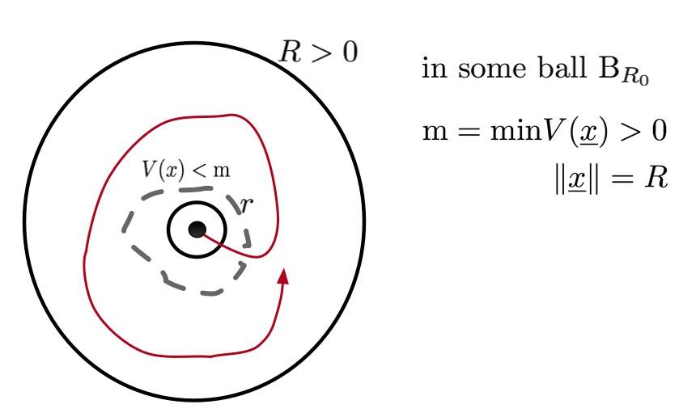

Motivation
Stabilization of Unstable System, Inverted Pendulum (previousely work)
A key concept of unstable system is the "Controllability set" in which it contains all points of state such that there exists a "feasible" control trajectory that brings the system to the origin. Approximation-based Approach
In terms of control system, in practice, the system may pose uncertainties; modelling error, parameter variation, and/or disturbances. Generally, if successful, the framework of deterministic Robust Control approach, e.g., integral sliding mode control (ISMC) design results in a fixed LTI controller that controls any frozen plant with bounded uncertainty set, satisfying the given specifications.However, due to fixed gain, deterministic Robust Control may not satisfy the wide range of changing operation, unknown steady-state, and the performance specifications get tighter, as well as larger uncertainty. In addition, it will ensure the zero steady state at low frequency due to the integration term. Consequently, the steady state error still exist in case of operation at high frequency.
 |
For this reason, to overcome that drawbacks, extremum seeking control based on a model-free control technique, e.g., robust adaptive controller is more attractive than conventional Robust Control approach. We has proposed Fuzzy PID control with robust extended Kalman filter (REKF), which is one of the non-linear controllers in class of robust adaptive controller. It is a technique to find and stabilize an a priori unknown optimal steady-state behaviour without the need of more detailed information in model. As motivated, the idea is to combine an online membership functions (MFs) tuning algorithm with a control design method to yield a time varying robust controller based on model-free that it effectively follows the changing plant, changing operations, and/or specifications. |